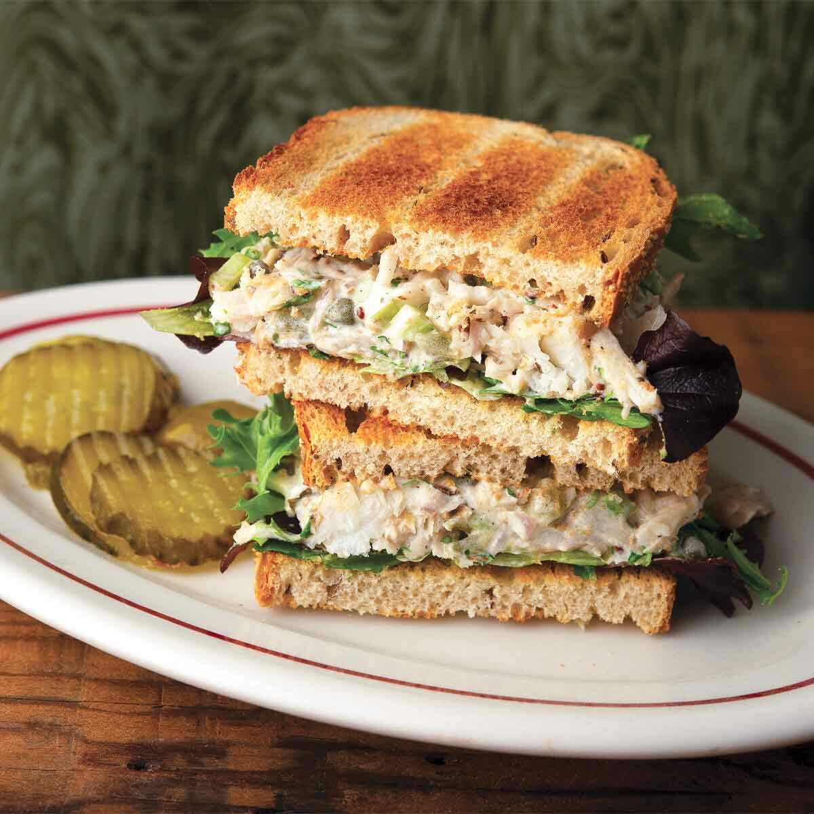

Home
Tuna Salad Sandwich Recipe

Description
I never get tired of an excellent tuna salad recipe, and of the hundreds of versions I’ve made, this version is the best. Serve on toast, crackers, a bed of greens, or grilled as a very delicious tuna melt.
Ingredients
- Whole wheat bread
- Mayonnaise
- 1 can of tuna
- 2 Cooked eggs
- Pickles
Steps
- Pour tuna and mayonnaise into a bowl
- Cut up pickles and eggs and pour add them to the bowl
- Use a fork to breakdown the tuna
- Mix until the entire bowl is homogeneous
- Spread mixture on two slices of whole wheat bread
- Add two more slices to make a sandwich
- Serve immediatly or store for later use(this recipe lasts for 24 hours in the fridge)
<<< Previous Page